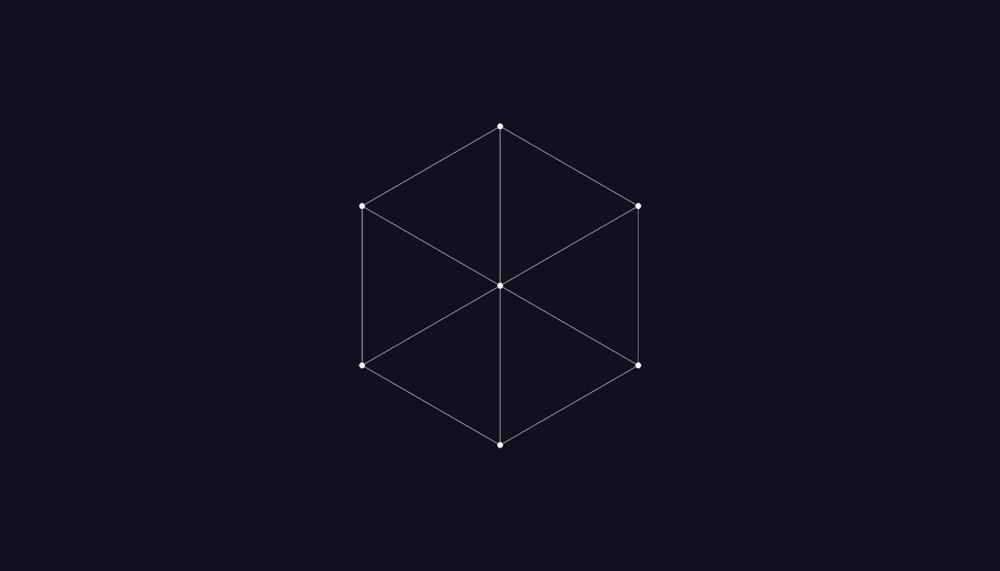
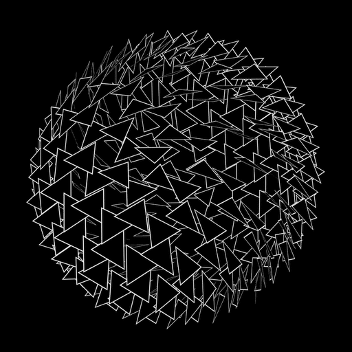
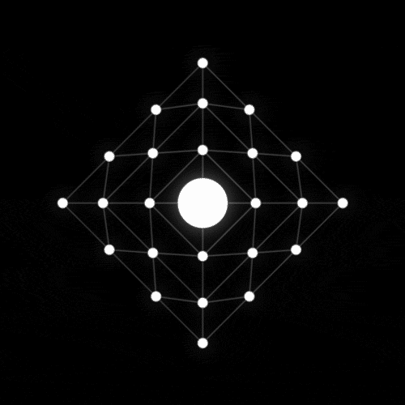

|


|
Fase 1 – Construção de PolígonosNesta primeira fase, vamos explorar a construção de polígonos utilizando vértices e arestas. Mas antes de começarmos, vamos refletir:
Objetivo: Nesta fase, você poderá adicionar vértices dentro do espaço de jogo e conectá-los com arestas para formar diferentes polígonos. Ao concluir sua construção, poderá pintar os elementos e acessar os desafios. Desafio: Você consegue formar diferentes tipos de triângulos ou quadriláteros? Como você pode classificá-los? Agora, é sua vez! Mãos à obra e divirta-se explorando os polígonos! |


|